Assemble ta toupie pièce par pièce, puis éjecte tes amis de l'arène.
- Genre
- Combat de toupies en arène
- Joueurs
- 1 à 4, en local
- Plateformes
- Windows, Linux (Steam)
- Sortie
- 2027
Le jeu
BattleSpinners est un jeu de combat de toupies en pixel art, en vue de dessus. De deux à quatre joueurs assemblent une toupie à partir de cinq pièces, la lancent dans l'arène et s'affrontent jusqu'à ce qu'il n'en reste qu'une en rotation, en éjectant leurs rivales du stade ou en épuisant leur endurance.
Chaque pièce modifie les statistiques de la toupie, et deux d'entre elles donnent accès à des capacités spéciales : dash, trou noir, vol d'endurance… Un système de posture récompense la pression : faites perdre l'équilibre à une toupie et votre coup suivant devient critique. En solo, un mode arcade oppose le joueur à des bots sur huit niveaux de difficulté. BattleSpinners est développé par un développeur solo à Toulouse et sortira sur Steam en 2027.
Points clés
- Multijoueur local de 2 à 4 joueurs, en chacun pour soi ou en équipes ; jeu en ligne via Steam Remote Play Together.
- Cinq emplacements de pièces, huit variantes chacun. Chaque pièce modifie l'Attaque, la Défense, l'Endurance, la Vitesse et le Poids.
- 16 capacités spéciales, deux par toupie, liées aux pièces équipées.
- Jauge de posture : videz celle d'une rivale et votre coup suivant devient critique.
- Lancement chronométré : une jauge de lancement détermine la vitesse et la direction de départ.
- Mode arcade contre des bots sur huit niveaux de difficulté, dans six arènes aux pièges différents.
Trailer d'annonce
La vidéo est hébergée sur YouTube. Le clic charge le lecteur de YouTube.
Fichiers vidéo
- Trailer, MP4 4K 000 Mo
- Trailer, MP4 1080p 000 Mo
- Rushes de gameplay sans musique, clips 16:9 000 Mo
Captures d'écran
Cliquez sur une capture pour le PNG 1920×1080. Les versions 4K sont dans le ZIP.

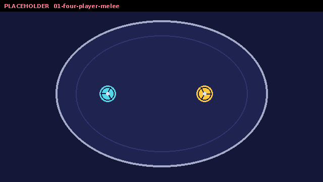

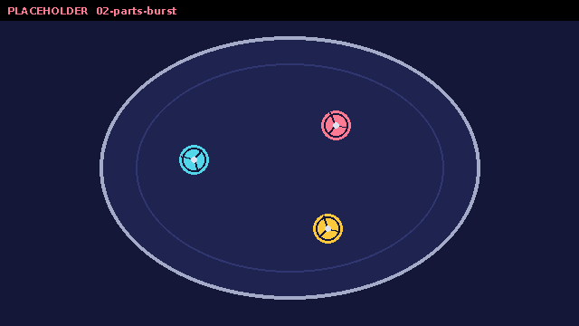

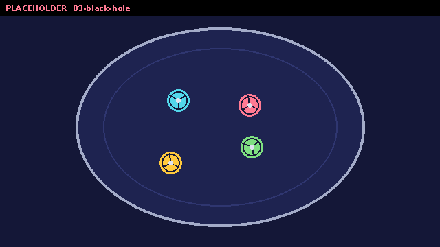

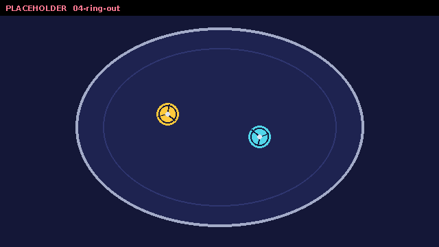

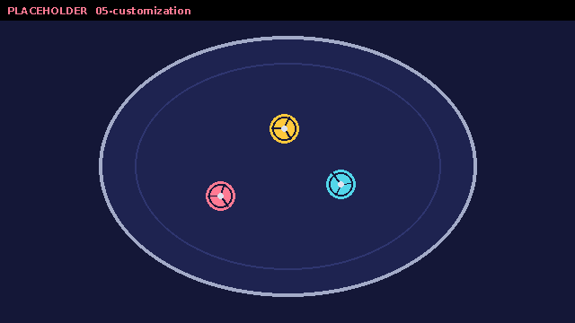

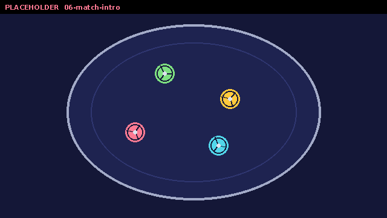

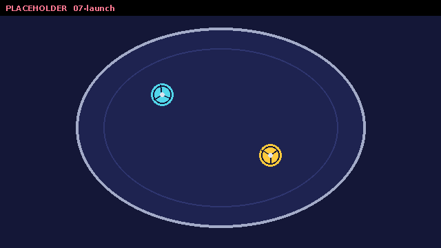

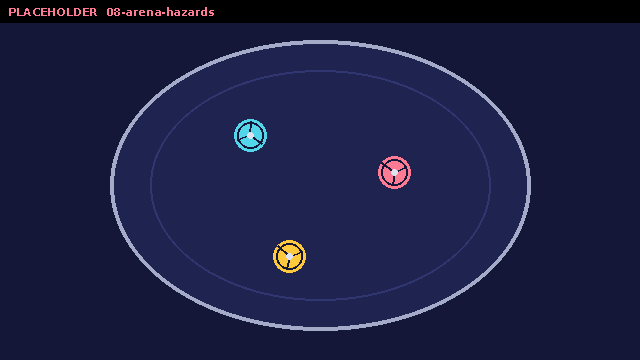
GIF et boucles courtes
Chaque boucle existe en GIF (640×360) et en MP4 (1920×1080).


Logos et visuels
PNG avec transparence. Merci de ne pas recolorer ni recadrer le logo.


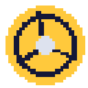

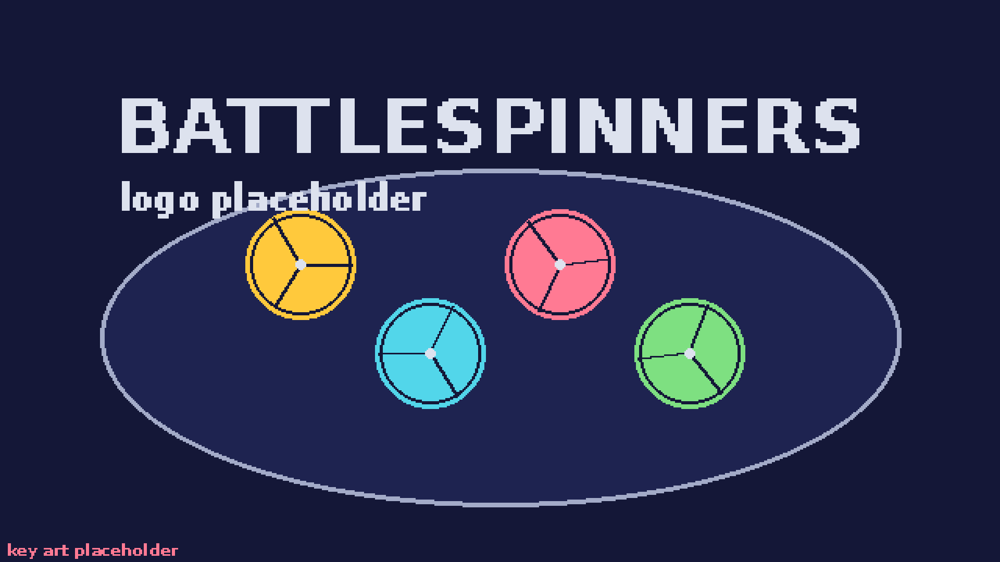


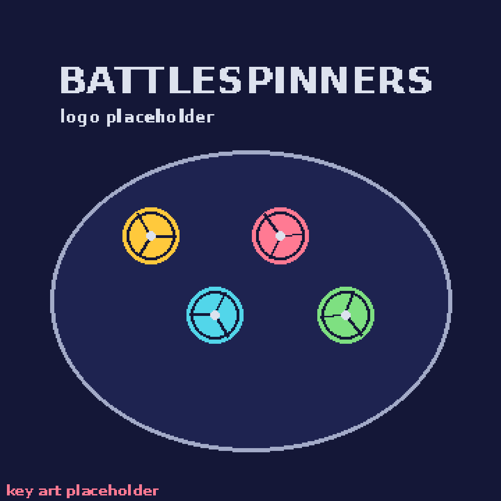


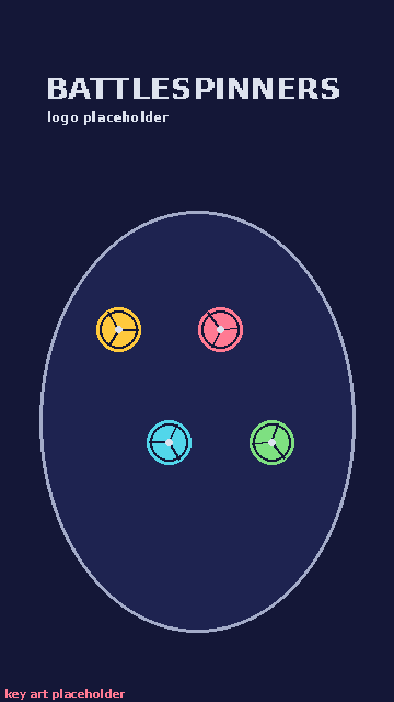

Fiche technique
- Développeur et éditeur
- Nowa Letyrex, développeur solo
- Basé à
- Toulouse, France
- Date de sortie
- 2027
- Plateformes
- Windows et Linux, sur Steam
- Prix
- À annoncer
- Joueurs
- 1 à 4 sur le même écran ; en ligne via Steam Remote Play Together
- Langues
- anglais, français, espagnol
- Moteur
- Godot
- Steam
- store.steampowered.com/app/4324770
- Site
- battlespinnersgame.com
- Réseaux
- Bluesky, X, Instagram, YouTube (identifiants)
Le développeur
BattleSpinners est développé par Nowa Letyrex, développeur solo installé à Toulouse. Une ou deux phrases avec tes mots : pourquoi ce jeu, ce que tu faisais avant, ce que tu veux faire ressentir aux joueurs.
Contact et conditions
Presse et créateurs : press@battlespinnersgame.com. Réponse sous 48 heures.
Jouer au jeu : une version privée est disponible sur demande pour les articles et les streams. Précisez votre média ou votre chaîne dans votre e-mail.
Streams et vidéos : vous pouvez streamer BattleSpinners et monétiser vos vidéos sans demander d'autorisation.
Musique : indiquer le statut de la bande-son une fois validé avec le compositeur, par exemple « La bande-son peut être utilisée en stream et dans des vidéos monétisées ».
Embargo : aucun. Tout le contenu de cette page peut être publié dès maintenant.
Contenus : toutes les images, vidéos et textes de cette page peuvent être utilisés pour des articles et des vidéos consacrés à BattleSpinners.
Page mise à jour le .